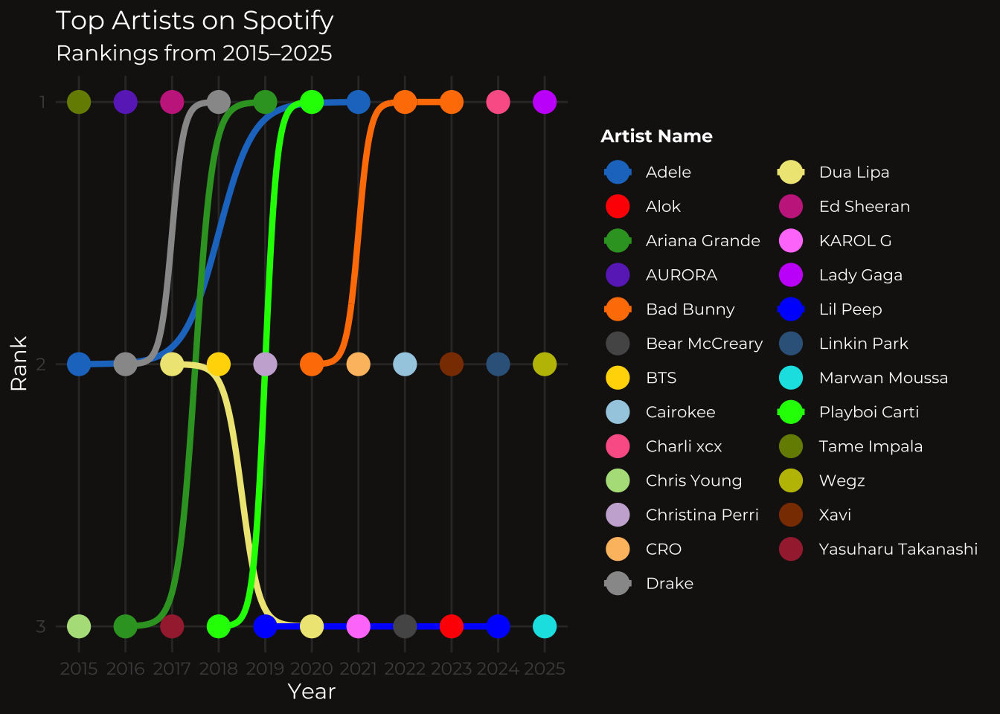
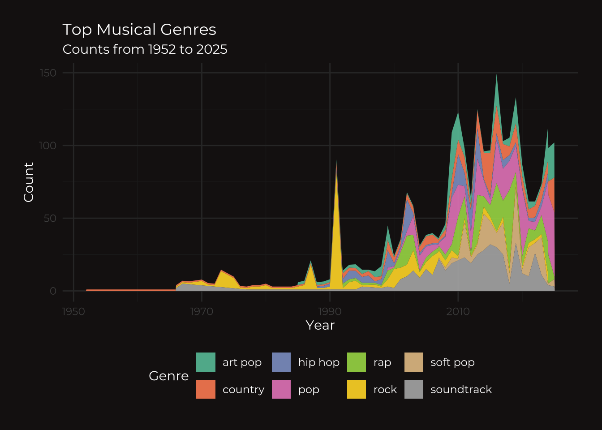

Your visualization must involve loading, transforming, and visualizing a set of custom data into a creative, non-traditional representation.
Recreating Spotify Wrapped
One thing about me is that I really love music! There is something about the production, lyricism, and other creative aspects that just excite me. Since I am very passionate about music, I thought it would be very fun to stay in the realm of it and create visualizations.
I found a dataset called “Spotify Global Music Dataset (2009-2025),” which provides information of streaming metadata that tracks the performance and characteristics of music during the modern streaming era. While the dataset was compiled between 2009 and 2025, it has a historical range of tracks released as early as 1952, allowing for a longitudinal analysis of musical trends over several decades. It includes columns like track_name, track_popularity (ranging from 0-100; they did not explain this but I assume 100 means more popular), artist_name, artist_popularity (also ranging from 0-100), artist_genres, etc. This dataset is different from the dataset used in the Collaborative Data Science project I worked on.
My goal was this dataset is to try and create Spotify Wrapped-esque visualizations for the data from the past decades. Specifically, I created a bump chart showing the top artists over 2015-2025 and a mountain-like chart to show the top genres since 1952 from what was available from the Spotify dataset.
I wanted to use my own data for this project, but it takes a few days to a month for Spotify to prepare this information. However, I hope I can use this code and make the plots for my listening data!
Dataset link: https://www.kaggle.com/datasets/wardabilal/spotify-global-music-dataset-20092025/data (I specifically used “track_data_final.csv)
Preliminaries:
Here, I am loading in the necessary pacakges and dataset. read_csv() was used from {tidyverse} and col_names was set to TRUE so the first row can serve as the column names. Additionally, I used head(), names(), and str() to explore the dataset.
# loading in necessary packageslibrary(tidyverse)
── Attaching core tidyverse packages ──────────────────────── tidyverse 2.0.0 ──
✔ dplyr 1.2.1 ✔ readr 2.1.6
✔ forcats 1.0.1 ✔ stringr 1.6.0
✔ ggplot2 4.0.3 ✔ tibble 3.3.1
✔ lubridate 1.9.4 ✔ tidyr 1.3.2
✔ purrr 1.2.2
── Conflicts ────────────────────────────────────────── tidyverse_conflicts() ──
✖ dplyr::filter() masks stats::filter()
✖ dplyr::lag() masks stats::lag()
ℹ Use the conflicted package (<http://conflicted.r-lib.org/>) to force all conflicts to become errors
Rows: 8778 Columns: 15
── Column specification ────────────────────────────────────────────────────────
Delimiter: ","
chr (8): track_id, track_name, artist_name, artist_genres, album_id, album_n...
dbl (6): track_number, track_popularity, track_duration_ms, artist_popularit...
lgl (1): explicit
ℹ Use `spec()` to retrieve the full column specification for this data.
ℹ Specify the column types or set `show_col_types = FALSE` to quiet this message.
To prepare the data for the first chart, I began cleaning the data. First, I created d_notation to standardize the artist_genres column and strip away brackets and quotation marks, and fix the spacing, ultimately creating a clean string of text. I then extracted the four-digit year from the album_release_date with substr() and converted it into a numeric type for plotting. Lastly, because there were many songs associated with multiple genres, separate_rows() function unnested these lists and created individual rows for each genre per song. Empty entries were also removed. This results in a new column called genres_clean and was assigned the the final data frame d_clean.
# cleaning data framed_notation <- d |>mutate(genres_clean =str_remove_all(artist_genres, "\\[|\\]|'"), # removing brackets and ''genres_clean =str_replace_all(genres_clean, ", ", ",")) |># replacing "," with a standard comma if needed)mutate(year =substr(album_release_date, 1, 4)) |># extracting the year since YEAR-MONTH-DAY was the original formatmutate(year =as.numeric(year)) # converting to numeric# separating songs with multiple genres into individual rowsd_clean <- d_notation |>separate_rows(genres_clean, sep =",") |># separating rows based on commasmutate(genres_clean =str_trim(genres_clean)) |>filter(genres_clean !="") # removes empty strings where no genre was listed
Bump Chart for the Top Artists Over the Years
The following code creates a bump chart from the {ggbump} package (downloaded from the creator’s GitHub!) to visualize the ranking of the top artists between 2015 and 2025. I only did the top three artists for the last ten most recent years in the dataset because there was a lot of data! After loading in the necessary libraries for the bump plotting, font, and color palettes, I summarized the listening data by calculating a total popularity score for each artist per year (total_score). A numerical rank is then calculated based on these scores and filters the results to subset the top three artists for each year (rank). To achieve the “Spotify” aesthetic, the code used the Montserrat font from Google Fonts and a dark theme. The resulting bump plot uses smooth lines to trace the movement of artists through the rankings over time to illustrate how global listening has changed across a decade.
# DATA WRANGLING# loading in package for bump chartslibrary(ggbump)library(showtext) # for Google Fonts
Loading required package: sysfonts
Loading required package: showtextdb
library(pals) # for plot colors# preparing data to rank top artists by yearbump_data <- d_clean |>group_by(year, artist_name) |># grouping by year and artistsummarize(total_score =sum(track_popularity, na.rm =TRUE), .groups ="drop") |># calculating popularity for each artistgroup_by(year) |>mutate(rank =rank(desc(total_score), ties.method ="random")) |># random tie-breaking ensures no overlapping ranksfilter(rank <=3) |># choosing top 3 artistsfilter(year >=2015) |># choosing most recent decadeungroup()# PLOT # adding font to mimic Spotify's font font_add_google("Montserrat", "montserrat")showtext_auto() # enabling font rendering for the plot# bump plot to map top artistsggplot(bump_data, aes(x = year, y = rank, color = artist_name)) +geom_bump(smooth =8, size =1.5) +# creating lines between ranksgeom_point(size =5) +scale_y_reverse(breaks =1:3) +# reverse axis so Rank 1 is at the topscale_color_manual(values = pals::cols25(25), name ="Artist Name") +# adding high-contrast color palettetheme_minimal(base_family ="montserrat") +# adding font to plottheme(plot.background =element_rect(fill ="#191414"), # matching Spotify's signature blacktext =element_text(color ="white"),legend.position ="right",legend.background =element_blank(), # removing legend backgroundlegend.key =element_rect(fill ="#191414", color =NA), # removing boxeslegend.text =element_text(size =8, color ="white"), # making text smallerlegend.title =element_text(size =9, face ="bold"), # adjusting grid linespanel.grid.major =element_line(color ="#333333"), panel.grid.minor =element_blank()) +# removing minor linesscale_x_continuous(breaks =seq(2015, 2025, by =1)) +# setting x-axislabs(title ="Top Artists on Spotify", subtitle ="Rankings from 2015–2025", color ="Artist Name", x ="Year", y ="Rank")
Warning: Using `size` aesthetic for lines was deprecated in ggplot2 3.4.0.
ℹ Please use `linewidth` instead.

The results show the top three artists between 2015-2025 based on the data available in the dataset. Many artists were a top artists only one time, while some were top artists with different rankings for multiple years. For example, Playboi Carti was ranked the third top artist in 2018 and the first in 2020–I had no idea about this.
Mountain Plot for Top Genres from 1952-2025
The next visualization is a mountain-like area plot to visualize the shifting musical genre preferences over several decades. First, the top eight genres were identified to ensure the peaks of the most-listened-to music were clear (top_genres). The data were then aggregated by year to calculate play counts (mount_data). Then, by using a centered vertical adjustment, the visualization creates a mountain-like visualization. Similarly, the Montserrat font and a dark background was used to mimic Spotify’s images.
# DATA WRANGLING# filtering top 8 genres for mountain peakstop_genres <- d_clean |>count(genres_clean, sort =TRUE) |>head(8) |>pull(genres_clean) # pulling as a single vector to create genre list# preparing data for peaksmount_data <- d_clean |>filter(genres_clean%in%top_genres) |># filtering top genresgroup_by(year, genres_clean) |>summarize(count =n()) # aggregating totals per year
`summarise()` has regrouped the output.
ℹ Summaries were computed grouped by year and genres_clean.
ℹ Output is grouped by year.
ℹ Use `summarise(.groups = "drop_last")` to silence this message.
ℹ Use `summarise(.by = c(year, genres_clean))` for per-operation grouping
(`?dplyr::dplyr_by`) instead.
# PLOT# adding font for mountain chartfont_add_google("Montserrat", "montserrat")showtext_auto()# creating mountain-like visualizationggplot(mount_data, aes(x = year, y = count, fill = genres_clean)) +geom_area(position =position_stack(vjust =0.5), alpha =0.9) +# centering stack to create the symmetrical mountain flowscale_fill_brewer(palette ="Set2") +# assigning colorstheme_minimal() +theme(plot.background =element_rect(fill ="#191414", color =NA), # dark theme for backgroundtext =element_text(family ="montserrat", color ="white"), # adjusting textlegend.position ="bottom", # adjusting legendlegend.text =element_text(size =9),plot.margin =margin(20, 20, 20, 20), # Add a little padding so the stream doesn't hit the edgespanel.grid.major =element_line(color ="#333333"), # adjusting gridlinespanel.grid.minor =element_line(color ="#222222")) +labs(fill ="Genre", x ="Year", y ="Count", title ="Top Musical Genres", subtitle ="Counts from 1952 to 2025")

The plot shows that art pop, country, hip hop, and pop have been some of the most popular genres over the past couple of decades. The mountain peaks become higher after the 1990s, as the music included in the dataset between the 1950s and 1990s is small.